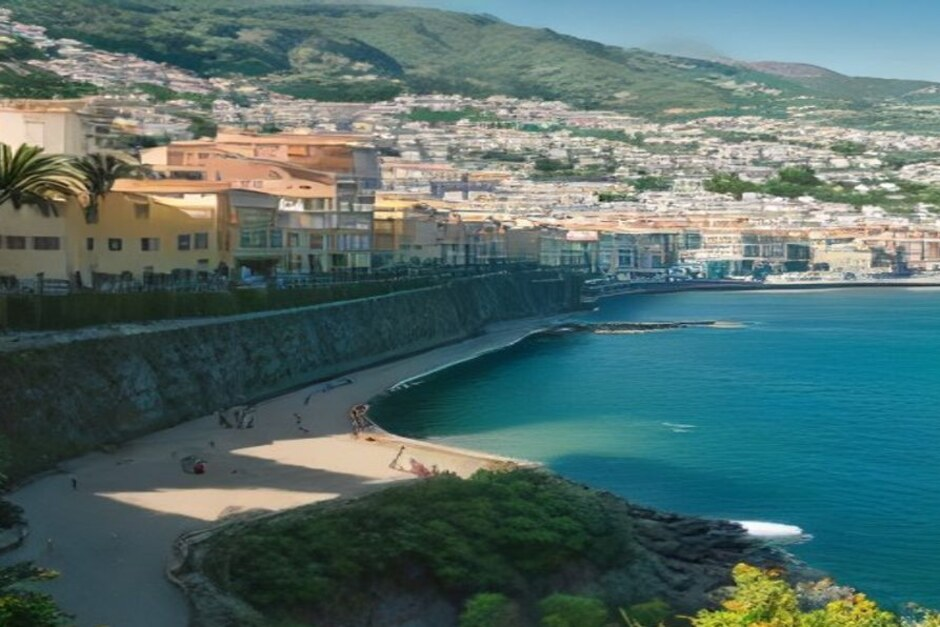
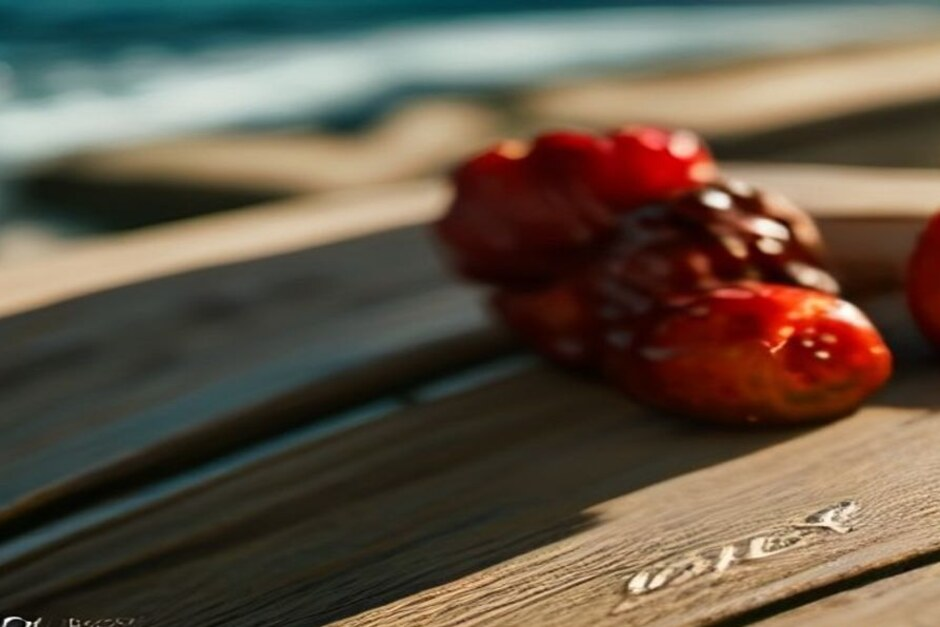

Once a year, Funchal stops to mark its own birthday — flags, a solemn mass, medals for local heroes, and two of the island's oldest boat races rowed out in the bay. Here's when it falls in 2026, what actually happens, and where to stand to see the water side of it.
When is Funchal City Day 2026?
Funchal City Day — Dia da Cidade do Funchal — falls on Friday 21 August 2026, marking the 518th anniversary of the town's elevation to city status, decreed by royal charter of King Manuel I in 1508. It's one of the oldest civic dates on the island's calendar, older than most of the festivals visitors come for. The formal date never moves; the wider week of concerts, sport and culture built around it usually runs from roughly the third week of August into the days that follow.

What is Funchal City Day, exactly?
It's a civic anniversary, not a religious or harvest festival like most of Madeira's other calendar dates. The morning of 21 August opens with the raising of flags and the city anthem at Município Square, followed by a solemn mass at the Church of the Colégio and a commemorative session in the Municipal Assembly, where the Câmara awards medals of merit to residents who've distinguished themselves in service to the city. It's formal, but it's public — anyone can stand in the square and watch.
What happens during the surrounding week?
Around the date itself, the Câmara Municipal do Funchal builds out a fuller programme of culture, music and sport. In recent years this has included a choir performance the evening before, a book launch tied to Funchal or Madeiran history, an urban cycling championship through the streets around the Hospital district and Parque de Santa Catarina, and — the part visitors on the water tend to enjoy most — two traditional rowing events in Funchal Bay: the José da Silva "Saca" sea race and the traditional canoe regatta, both raced by local crews in wooden boats that have barely changed in design for decades.

Where can you watch the traditional bay races?
The races are rowed in Funchal Bay, directly in front of the Avenida do Mar and the marina — the same stretch of water Chifbay's boats depart from every morning. Any point along the seafront promenade or the marina wall gives a clear view of the crews pulling past, and the crowd tends to build along the railings between the marina and Praça do Povo as the boats round their markers. If you happen to already be out on the water that afternoon, you get the best seat of all — level with the boats, close enough to hear the oars.
Is Funchal City Day a public holiday?
Yes, but only locally. 21 August is a municipal holiday for the Funchal council area — council offices and many local services close, and you'll notice flags out across the city — but it isn't a national Portuguese holiday or a region-wide Madeira one, so shops and services in neighbouring municipalities like Câmara de Lobos or Santa Cruz carry on as normal.
Is it worth planning a boat trip around it?
If you're already in Funchal that week, yes — pair the two halves of the day. Spend the afternoon on a private boat trip from Funchal Marina, tracing the same coastline the city has looked out on for over five centuries — Cabo Girão, the coves toward Câmara de Lobos, a chance of dolphins — then walk back along the Avenida do Mar in the early evening as the flags, music and rowing crews take over the bay. Exact timings for each year's ceremonies and races are published by the Câmara Municipal do Funchal in the weeks beforehand, so it's worth a quick check closer to the date if you want to catch a specific event.
Five hundred and eighteen years old, and the city still throws its birthday party on the water.
If your trip lands around 21 August, build in an hour along the seafront — it's a rare chance to see Funchal celebrate itself, not just host visitors passing through.